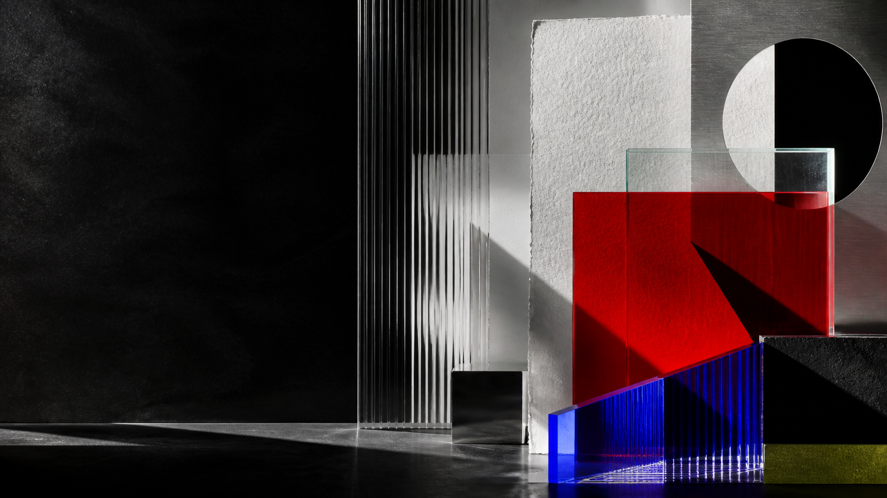

CNTR AISLE
Project Manager & Scrum Master for Brown's CNTR AISLE, helping turn AI legislation analysis into a clearer public platform.

creator
Hi, I’m Grace. I build at the intersection of responsible technology, music, writing, and creative entrepreneurship, transforming ideas into systems, platforms, performances, and communities with cultural and social impact.
project runner
A semantic constellation of infrastructure, venture systems, behavioral design, knowledge graphs, and speculative memory.
Simulation layerA speculative civilization simulator disguised as a future media ecosystem, with sliders, markets, Reddit-like discourse, and persistent world-state memory.
Social planning layerAn agentic outing planner that turns group constraints into ranked, explainable restaurant and activity plans with booking handoff.
selected work
Project Manager & Scrum Master for Brown's CNTR AISLE, helping turn AI legislation analysis into a clearer public platform.
A speculative civilization simulator disguised as a future media ecosystem, with sliders, market signals, Reddit-like discourse, and persistent world-state memory.
A social-planning product that reads the occasion, group, budget, location, cuisine, and activity intent, then ranks clear plans with real place discovery and safe booking handoff.
A local-first aliveness operating system with proof-of-life rituals, adaptive planning, emotional repair, cloud sync, and a potato mythology that turns small actions into a living interface.
Founder and President of a nonprofit arts organization, leading concerts, festivals, marketing, and donation campaigns that raised over $25,000.
Music as a system: MyMusicID, Euterpe.io operations, math-and-music research, and original compositions for cinematic worlds.
Scholastic-recognized fiction and poetry, including a Short Story Gold Key, flash fiction mentions, and emotionally layered writing.
self introduction
I’m Grace Zhong, an English and Mathematics student at Brown, a music composer, writer, project manager, nonprofit founder, and aspiring entrepreneur. I’m most alive when I can mix mediums: music with computation, storytelling with systems, art with social impact, and AI with responsibility. This site collects my maturing footprints: the things I have built, led, composed, questioned, and am still learning how to make real.